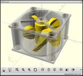
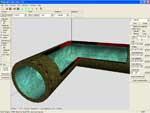
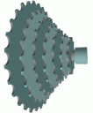
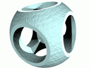

OpenCSG
The CSG rendering library
News Introduction Benefits Prerequisites Usage Download References Background Publications FAQ License
OpenCSGThe CSG rendering libraryNews Introduction Benefits Prerequisites Usage Download References Background Publications FAQ License |
|
OpenCSG is a library that does image-based CSG rendering using OpenGL. It is written in C++ and supports most modern graphics hardware using Microsoft Windows or the Linux operating system. The current version is OpenCSG-1.8.1.
What is CSG, anyway? CSG is short for Constructive Solid Geometry and denotes an approach to model complex 3D-shapes using simpler ones. I.e., two shapes can be combined by taking the union of them, by intersecting them, or by subtracting one shape of the other. The most basic shapes, which are not result of such a CSG operation, are called primitives. Primitives must be solid, i.e., they must have a clearly defined interior and exterior. By construction, a CSG shape is also solid then.
Image-based CSG rendering (also z-buffer CSG rendering) is a term for algorithms that render CSG shapes without an explicit calculation of the geometric boundary of a CSG shape. Such algorithms use frame-buffer settings of the graphics hardware, e.g., the depth and stencil buffer, to compose CSG shapes. OpenCSG implements a variety of those algorithms, namely the Goldfeather algorithm and the SCS algorithm, both of them in several variants.
CSG is often used as fundamental modeling technique in CAD/CAM applications. Here, image-based CSG rendering is the key to interactively manipulate CSG shapes. Since OpenCSG renders even complex CSG shapes fast, it can be advantageously used in such applications.
Raytracers such as PovRay have used CSG for shape modeling since long ago. Interactive modeling toolkits for such raytracers normally just ignore CSG commands, though. OpenCSG represents a valuable addition for such applications.
Before OpenCSG, CSG rendering has been hardly used in interactive applications, since the necessary algorithms are complicated and error-prone. By providing a free library that is easy to use, fast, and portable, OpenCSG has helped making CSG rendering more mainstream than it was in the past.

The OpenCSG library requires OpenGL and graphics hardware that runs OpenGL well. Note that OpenGL ES is currently not supported. The OpenGL implementation must provide frame buffer objects.
Frame buffer objects are a more recent extension for OpenGL. They are easy to develop for, and can be nowadays considered mature. They are also part of OpenGL 3.0. Beginning with OpenCSG 1.2.0, they are used by default.
In older versions, PBuffers were required to run OpenCSG. PBuffers are probably deprecated nowadays, and since OpenCSG version 1.6.0, they are no longer supported.
OpenCSG is written in C++ 98, uses namespaces and requires the STL. It compiles with all reasonable C++ compilers such as gcc, Clang, or Microsoft Visual Studio. Workspaces for Visual Studio 2022, Visual C++ 6. and Dev-C++ 5.11 are provided. Under Linux, any gcc compiler starting from version 3.0 will work.
OpenCSG has been sucessfully run on Intel and AMD CPUs. Generally, NVidia and AMD graphics hardware is well supported, and hardware where OpenCSG successfully has been run on includes everything that has been produced in the last 15 years.
On graphics hardware from Intel, OpenCSG did not work so well in the past. Recent OpenCSG versions contain fixes and workarounds for some bugs reported for Intel hardware. It seems that most issues have been fixed now. Still, generally, use the most recent graphics drivers, in particular for older HD 3000 or HD 4000 hardware. Also, the (non-default) Goldfeather rendering path generally appears to produce more robust rendering results compared to the SCS rendering path.
The interface of OpenCSG is very easy to use. There
is only a single abstract class called OpenCSG::Primitive.
A Primitive object has an attribute Operation
that denotes whether the primitive is intersected or subtracted.
To use OpenCSG, create a derived concrete primitive class by
implementing the render() method.
To actually do the CSG rendering, there is the function OpenCSG::render()
that takes a std::vector<Primitive*> as argument.
The render function evaluates the CSG expression given by the array of primitives
and initializes the z-buffer with the proper values for the CSG expression.
The color buffer remains unchanged, so afterwards, you must shade
the primitives in the array using a GL_EQUAL depth function.
Note that the render function does not evaluate a generic CSG tree that also would contain unions of CSG shapes. It has been shown that a generic CSG tree can be converted into an equivalent set of CSG expressions that the render function can handle. OpenCSG does not contain the functionality for this conversion since, after all, it is a rendering library.
Here is the complete interface of OpenCSG:
namespace OpenCSG {
enum Operation { Intersection, Subtraction };
class Primitive {
public:
Primitive(Operation, unsigned int convexity);
virtual ~Primitive();
void setOperation(Operation);
Operation getOperation() const;
void setConvexity(unsigned int);
unsigned int getConvexity() const;
void setBoundingBox(float minx, float miny, float minz,
float maxx, float maxy, float maxz);
void getBoundingBox(float& minx, float& miny, float& minz,
float& maxx, float& maxy, float& maxz) const;
virtual void render() = 0;
};
enum OptionType {
AlgorithmSetting,
DepthComplexitySetting,
OffscreenSetting,
DepthBoundsOptimization,
CameraOutsideOptimization,
};
void setOption(OptionType option, int newSetting);
int getOption(OptionType option);
enum Algorithm { Automatic, Goldfeather, SCS };
enum DepthComplexityAlgorithm { NoDepthComplexitySampling, OcclusionQuery, DepthComplexitySampling };
enum OffscreenType { AutomaticOffscreenType, FrameBufferObject, FrameBufferObjectARB, FrameBufferObjectEXT };
enum Optimization { OptimizationDefault, OptimizationForceOn, OptimizationOn, OptimizationOff };
void render(const std::vector<Primitive*>& primitives);
void setVertexShader(const std::string& vertexShader);
void setContext(int context);
int getContext();
void freeResources();
}
The convexity of a primitive is the maximum number of front (or back) faces of the primitive at a single position. For example, the convexity of a sphere is one and the convexity of a torus is two. Actually the convexity attribute is currently only used in the standard Goldfeather algorithm. For this algorithm, a convexity too low may result in rendering errors, a convexity too high will reduce rendering performance. The other Goldfeather variants render primitives of any convexity correctly without analyzing the convexity attribute. The SCS algorithms, on the other hand, can only handle primitives that have a convexity of one, else they produce rendering errors. Hence, SCS algorithms do not check this attribute.
The bounding box of the primitive can be provided using normal device coordinates, i.e., after transforming the primitive with modelview and projection transformation. It is not necessary to set the bounding box, but it allows for various performance optimizations.
The abstract render method of the primitive is implemented in a
derived class. Your implementation must not alter the modelview or projection
matrix (use glPushMatrix / glPopMatrix if in doubt).
Also you must not change the primary color in your implementation, since
OpenCSG uses it internally (in all rendering algorithms). For best performance,
you should only transmit vertex positions; no normals, texture coordinates, or
whatever else.
The render function performs, as said above, z-shading of
a CSG expression. The content of the stencil buffer is destroyed when
handling concave primitives or when using the DepthComplexitySampling
strategy.
Optionally, with setVertexShader the code of a GLSL vertex shader
can be provided to OpenCSG, that is used by OpenCSG for transforming the
geometry. By default, or when an empty vertex shader is set, OpenCSG
uses the fixed function pipeline. When setting a non-empty vertex
shader, that shader is used. There is no need, and no possibility,
to set a corresponding fragment shader. OpenCSG internally sets
a matching fragment shader itself.
The intent is that the shader can transform the vertices in exactly the same way as later, when the geometry is shaded by the caller using the GL_EQUAL depth function. This approach is needed to avoid z-artifacts when using GLSL.
Using the functions setOption() / getOption() you can control
and ask for certain settings used when rendering a CSG expression. You can
specify the
Algorithm, the method of
depth
complexity usage and the type of offscreen
buffer.
The Algorithm parameter specifies the method used for CSG rendering.
Besides Goldfeather and SCS, you can also choose
Automatic: This setting chooses the Goldfeather algorithm if
the primitive array contains concave primitives, else it chooses SCS.
The automatic setting also sets the DepthComplexityAlgorithm
(NoDepthComplexitySampling for arrays with few primitives,
else OcclusionQuery or at the last resort DepthComplexitySampling).
Aforesaid means that it is not possible to do CSG rendering of concave primitives and preserving the stencil buffer.
If the Automatic setting is not used,
the DepthComplexityAlgorithm parameter specifies the strategy
for profiting from depth complexity.
NoDepthComplexitySampling: Does not employ the depth complexity.
This essentially makes the algorithm O(n²), but with low constant costs.DepthComplexitySampling: Calculates the depth complexity k using
the stencil buffer. This makes the algorithm O(n*k), but with high constant costs.
In case of the Goldfeather algorithm, the literature denotes this as
layered Goldfeather algorithm.OcclusionQuery: Uses occlusion queries to profit implicitly from
depth complexity without calculating it. This is especially useful for
the SCS algorithm where this strategy is applied at shape level, resulting in a
O(n*k') algorithm (where k' <= k), without significant constant overhead.
This strategy requires hardware occlusion queries, i.E., the OpenGL extensions
GL_ARB_occlusion_query, eventually GL_ARB_occlusion_query2,
or GL_NV_occlusion_query.
The offscreen type specifies what kind of offscreen buffer OpenCSG uses for
internal CSG calculations. This setting is kind of obsolete with the removal
of the PBuffer option, that was removed in version 1.6.0.
The default AutomaticOffscreenType, and also the setting
FrameBufferObject preferably use, if the required OpenGL extensions
are available, FrameBufferObjectARB, then FrameBufferObjectEXT.
The remaining settings FrameBufferObjectARB, and FrameBufferObjectEXT
directly map to the usage of the corresponding OpenGL extension.
The depth bounds optimization improves the rendering performance by using
the OpenGL extension GL_EXT_depth_bounds_test to restrict
rendering to only the depth range indicated by the bounding box of a
primitive. This optimization is, by default, turned off. If you enable
it, ensure that the z-ranges of the bounding boxes are large enough,
otherwise they will not be correctly rendered. The gains you will get
from this optimization is probably only small.
The CameraOutsideOptimization setting enables rendering
optimizations that are only valid if the camera is known to be
outside of the CSG model. I.e., if the camera is inside of the
CSG model and the setting is enabled, rendering errors occur
that could be avoided otherwise. By default, this setting is
enabled(!) for the SCS, but disabled for the Goldfeather algorithm.
See the following remarks on the two algorithms for details:
For the Goldfeather algorithm, the setting controls the way that the parity value for a surface is calculated, which is the number of surfaces in front of the candidate surface in question. The textbook approach to determine it is to render all surfaces that are in front (z-pass). This has the drawback, though, that if the camera is inside of the CSG model, some surfaces could be clipped by the view frustum, resulting that rendering is incorrect. The alternative approach is to render surfaces behind (z-fail). With that, incorrect clipping of the surfaces is much less likely to happen and easy to avoid. So this is the more robust setting. Since 1.7.0, z-fail is implemented in OpenCSG and done by default. The performance of the two settings is usually similar. If your camera is outside of the CSG model, you may enable the optimization to check if it works better for you. The setting is also a chicken bit in case the new z-fail setting shows unexpected problems.
In the SCS algorithm, the setting controls the workings in the subtraction phase of the algorithm. When subtracting a primitive relative to the current z-buffer, the textbook approach is to mark the visible, front-facing polygons of the primitive in the stencil buffer. (At these places then the z-buffer is updated with the back-facing polygons behind the z-buffer). This approach however fails if the front faces of the subtracted primitive are clipped. The alternative, more compatible approach renders the primitive even one more time to avoid this problem. Due to the additional rendering pass, this approach is a bit slower. Since 1.7.0, OpenCSG implements this more robust approach. But it does not use it by default, mainly because not all kinds of rendering errors, related to the camera being inside the CSG model, are addressed by it.
OpenCSG creates, and reuses between different render() calls,
various OpenGL resources such as frame buffer objects. This
may be a problem in MDI applications with several OpenGL windows, of which
the OpenGL contexts are not shared. In this case, OpenGL resources allocated
in one OpenGL context cannot be reused with another context, so OpenCSG
would produce rendering errors. To solve this, the OpenCSG context
can be set to some unique integer identifier of the OpenGL window.
OpenCSG then creates/uses OpenGL resources in the render()
function per context. The function freeResources() frees
OpenGL resources for the currently active OpenCSG context.
Download OpenCSG-1.8.1.tar.gz. The archive has no dependencies that must be provided externally. The only library that OpenCSG depends on, and which it comes with, is Glad. Glad is used to load OpenGL function pointers and for OpenGL extension checking. Note that other helper libraries, i.e., RenderTexture and GLEW, are no longer part of OpenCSG since version 1.6.0. OpenCSG comes with CMake files for Linux and with project files for Visual Studio 2022, Visual C++ 6, and Dev-C++ 5. It is released under the GPL version 2 or newer.
Older versions are still available for download:
OpenCSG-1.8.0
OpenCSG-1.7.0
OpenCSG-1.6.0
OpenCSG-1.5.1
OpenCSG-1.5.0
OpenCSG version 1.4.2 and before were GPL version 2 only.
OpenCSG-1.4.2
OpenCSG-1.4.1
OpenCSG-1.4.0
OpenCSG-1.3.3
OpenCSG-1.3.2
OpenCSG-1.3.1
OpenCSG-1.3.0
OpenCSG-1.2.0
OpenCSG-1.1.1
OpenCSG-1.1.0
OpenCSG-1.0.2
OpenCSG-1.0.1
OpenCSG-1.0.0
OpenCSG-0.9.2
OpenCSG-0.9.1
OpenCSG-0.9
Development snapshots may be pulled from github.
Currently, I know of the following applications making use of OpenCSG:
|  | OpenSCAD is a software for creating solid 3D CAD objects by means of a scripting language. It supports interactive preview of the CSG geometry as well as exporting the final geometry as 3D model. There are precompiled binaries for Linux, Windows, and MacOS X. |
| Ayam is a 3D modelling environment for the RenderMan interface, running on Unix, Win32, and Mac OS X. Since version 1.8, Ayam provides the plugin aycsg for real-time CSG preview of complex CSG hierarchies using OpenCSG as rendering library. | |
 |
Image-based Visual Frustum Intersection. A scientific project to reconstruct and visualize the 3D shape of an object, based on some projections of the object gathered by camera's around. The algorithm is capable of dealing with refractive distortions when the object is inside a water bowl. |
|  | koraX's CSG Editor (web archive link). This editor for MS Windows allows to compose textured CSG shapes from a set of predefined primitives. The application contains a very good online help that depicts nicely what CSG is about, and that furthermore contains some tutorial how to create 1) a graphical widget and 2) a pipe. |
I have developed the algorithms for OpenCSG in my time as research assistent at HPI at the University Potsdam. In this time the following publications about OpenCSG and about image-based CSG rendering have been written:
|  |
F. Kirsch, J. Döllner: Rendering Techniques for Hardware-Accelerated Image-Based CSG. Journal of WSCG, 12(2):221-228, 2004. This paper gives an introduction to image-based CSG rendering and describes the two techniques that are used in OpenCSG to accelerate rendering compared to older implementations: Visibility transfer using textures and occlusion queries for the SCS algorithm. |
|
F. Kirsch, J. Döllner: OpenCSG: A Library for Image-Based CSG Rendering. Proceedings of the FREENIX / Open Source Track, 2005 USENIX Annual Technical Conference, 129-140, 2005. This paper describes OpenCSG itself. It concentrates on the API, explaining internal implementation details only as shortly as possible. It also outlines possible non-obvious uses of OpenCSG. |
|
|  |
F. Kirsch: Entwurf und Implementierung eines computergraphischen Systems zur Integration komplexer, echtzeitfähiger 3D-Renderingverfahren. Published online, URN: urn:nbn:de:kobv:517-opus-6079, 2005. My doctoral dissertation (in german) describes an approach for integration and combination of several rendering techniques using a scene graph system. As such, it contains a long chapter covering CSG rendering. |
Can I render a shape with different colors? The documentation says I must not change the primary color in the function of my class for primitives, since OpenCSG uses the color for internal purposes.
You can shade your shapes with whatever color you want. While your primitive objects for use in OpenCSG must not use the primary color, after calculating z-values with OpenCSG you are free to render the same geometry with primary colors.
Does OpenCSG require a stencil buffer?
You must setup a stencil buffer in your application when rendering
concave primitives or when using DepthComplexitySampling.
Internally, the stencil buffer is always needed in OpenCSG
when rendering into the offscreen frame buffer object.
Can OpenCSG calculate the geometry of a CSG expression?
No, unfortunately this is not possible using image-based CSG algorithms (at least not in a trivial way). If you require this, have a look at other libraries such as the GTS library.
My camera is inside of the CSG model, and rendering is not correct. What can I do?
Since version 1.7.0, if the camera is inside of subtracted primitives, the Goldfeather
algorithm in OpenCSG should handle these cases correctly. You must ensure that the back sides of the subtracted
primitives are not clipped by the view frustum. For more information, read the documentation
on the CameraOutsideOptimization setting.
What are the dependencies of the example program?
The OpenCSG example requires GLUT or FreeGLUT. One of these libraries is likely pre-installed with your favorite linux installation. Visual Studio users should compile or download FreeGLUT, or with older versions of Visual Studio they may install GLUT for Windows. Dev-C++ users can install the precompiled GLUT for Mingw32.
Is there any relationship between this OpenCSG and the AI company OpenCSG?
No. The CSG rendering library OpenCSG is an independent project and has no affiliation with the Beijing-based AI company of the same name.
OpenCSG is copyrighted by Florian Kirsch and by the Hasso-Plattner-Institute at the University of Potsdam (HPI), Germany.
Since version 1.5.0, you can license OpenCSG by terms of the GNU GPL, version 2 or later. This means that you may release applications or libraries that use (parts of) OpenCSG (a) only if you release the complete source code of your application or library and (b) only if you release it under the GPL license. Versions before 1.5.0 could be licensed under the GPL version 2 only.
Note that OpenCSG comes with code that is not under copyright of the HPI or Florian Kirsch. This is the code generated from Glad. This code is licensed under the terms described in the generated source files, and at the Glad github repository.
© 2002-2026, Florian Kirsch, e-mail: mail at opencsg dot org,
2002-2005 Hasso-Plattner-Institute Potsdam.
Last change: 03-Jan-2026